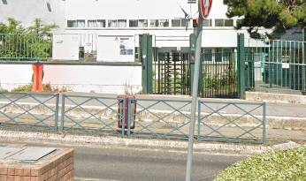

Mes Projets Futurs
Intégrer une école ou une université spécialisée dans le domaine de l'informatique afin de poursuivre mes études jusqu'au niveau Bac +3. Par la suite, je prévois de rejoindre une école d'ingénieurs pour approfondir mes connaissances et acquérir les compétences nécessaires dans le domaine de l'informatique.
Apprendre les multiples langages de programmation pour réaliser mes projets avec créativité et efficacité.

Formation

DORANCO Ecole Supérieure des Technologies Créatives & Organisme de Formation
Formation
2022 - 2024
Brevet de technicien supérieur - Services informatiques aux organisations (SIO)
Compétences acquises
- HTML/CSS : Concevoir et effectuer des modifications sur le site web concerné de manière précise et esthétique.
- Serveur GLPI : Gérer et inventorier le parc informatique de manière centralisée et efficace, résoudre les incidents, assister les utilisateurs et maintenir la qualité des services informatiques
- Serveur Zabbix : Superviser et surveiller une infrastructure, des systèmes et des réseaux à distance de manière proactive et efficace.
- Stormshield : Administrer et superviser le trafic entrant et sortant de manière efficace et sécurisée.
- Serveur Guacamole : Facilite l'accès distant aux applications et aux bureaux virtuels de façon sécurisée et efficace.
- Serveur DNS : Gérer et résoudre les noms de domaine pour faciliter l'accès aux ressources sur Internet de manière transparente et fiable.
- Attaque par ingénierie sociale : Manipuler et exploiter les interactions humaines pour obtenir des informations sensibles ou et a accéder à des systèmes informatiques de manière frauduleuse à l'aide de l'outil "SET".
- Mise en place d'une veille technologique : Surveiller et analyser les nouvelles technologies pour rester à jour et prendre de bonnes décisions.
- VMware et VirtualBox : Pouvoir créer et gérer des machines virtuelles sur un même matériel physique.
- Injection SQL : Technique malveillante consistant à insérer du code SQL non autorisé dans une requête afin de compromettre ou manipuler une base de données, souvent dans le but d'accéder à des données sensibles ou de corrompre le système.